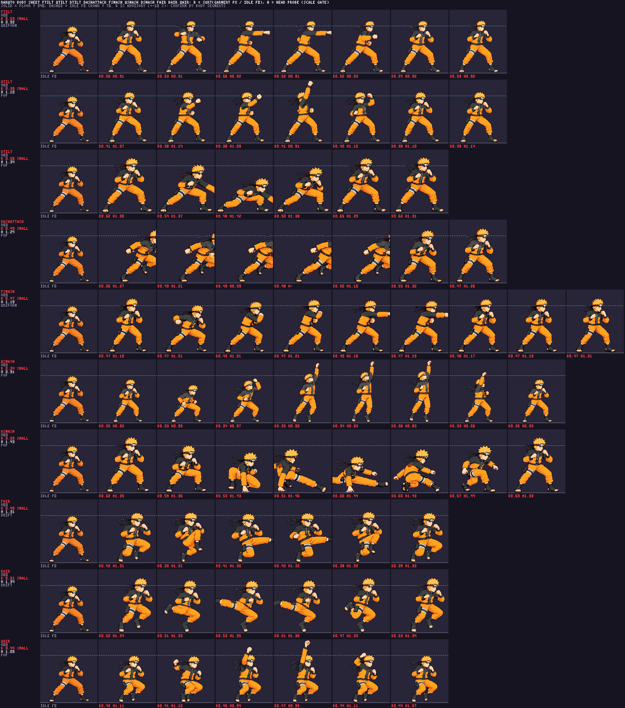

Naruto directional normals — ENG-112
Technical hold across all ten moves. Three image-generation calls were used per move. The 29 saved candidate files are preserved under art/characters/naruto/raw/_qa_hold/; fTilt call 1 returned but was not saved, leaving v01 and v02. The strict production gate did not accept any candidate, and Astra independently placed all ten on HOLD with zero manual scale passes. Packer head/shoe values are color-region proxies; sleeve occlusion and clipping make several values unreliable anatomy measurements. The production atlas keeps its existing 54 animations / 245 frames; these moves remain on their stand-ins. This page does not approve any drawing.
The two-page candidate atlas below is diagnostic evidence only. To render exact 48-color candidate cells, the packer ran in a separate review output folder with a temporary manifest that marked each latest version as already approved for diagnostic inclusion. That manifest was outside the repo and removed afterwards. No candidate was written to public/characters/naruto/, promoted, or treated as approved. The atlas has 64 animations / 315 frames, so TOOL-060 places frames 256 onward on sheet2. Astra FINAL5 diagnostic audit inspected all 70 candidate cells at native density beside idle and approved references; it is static-only, with runtime contacts and timed playback still pending.
Identity references: approved Naruto Shippuden model sheet and idle. Candidates face right. Raw strips are shown as lossless WebP copies; source PNGs remain in _qa_hold with SHA-256 records in the production log. Packed loop/crops are from the isolated quantized diagnostic atlas. The source drawings have visibly softened edges, so hard-pixel style remains a hold.
Astra FINAL5 audit (all ten HOLD) · Astra evidence JSON · Diagnostic atlas sheet 1 · Diagnostic atlas sheet 2 · Diagnostic anims.json · Quantized candidate body sheet · Body report · Production atlas (stand-ins) · Production anims.json


Lineup: idle, candidate active pose, mapped stand-in
Cells share the diagnostic atlas pixel density; the active candidate cell is selected from the move phase metadata. Stand-ins come from the production pack. Idle f0 anchors the comparison.
Body and head-size evidence

The body proxy is advisory. The report notes that three declared Naruto body colors are absent from the 48-color diagnostic palette; use measurements as flags, not a dimensional pass.